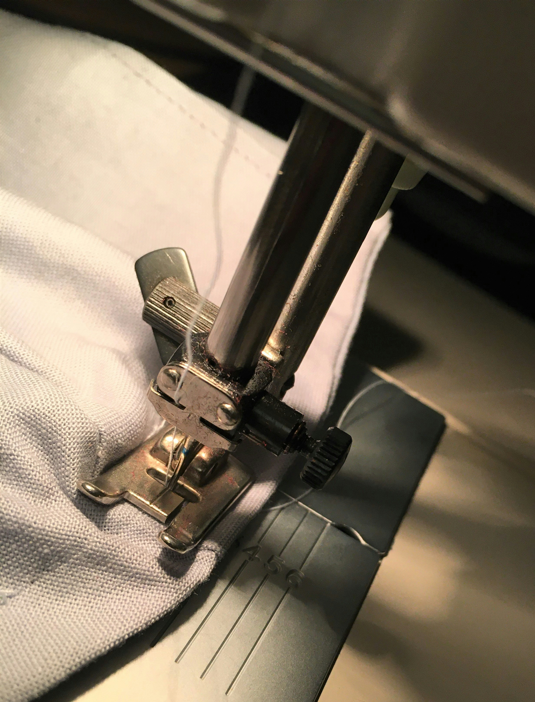

One of the greatest benefits a tailor can provide is helping individuals with special clothing requirements or repairing damaged garments. Our tailors are highly experienced in restoring clothing and creating adjustments for those who struggle to find the right fit.
To provide “old fashioned customer service” and have happy, well-dressed customers for life.
To ensure you are completely satisfied with our services — “All At An Affordable Price.”
Most of us have experienced rips, tears, broken zippers, or missing buttons. There's no need to give up on your clothes just yet — let us take a look and see if we can repair the damage.
People are not the same size, and we know that for those who have special sizing needs, it can be difficult to find the right fit. We love helping people look and feel their best by ensuring their clothes fit them well.
Manufacturers of infant clothing sew their designs to a standard pattern, but infants are all different. If you want your child's clothing to fit perfectly, we can make that happen.
You will love how special you feel and look once we have helped tailor your clothing to perfection.
Book a FittingAddress
2345 Southern BLVD SE, Rio Rancho, NM 87124
Phone
(505) 460‑1340
Email
Get the results you love or your money back — no questions asked